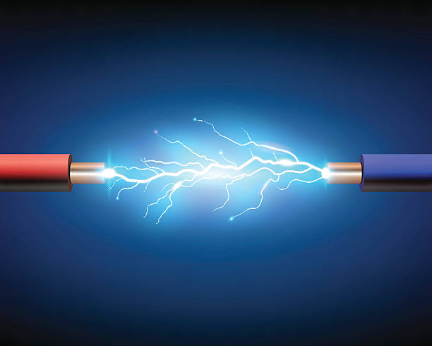

Electrical and Electronics Engineering (EEE) is a dynamic branch of engineering that focuses on the study and application of electricity, electronics, and electromagnetism in various systems. It deals with the design, development, and maintenance of electrical systems and electronic devices used in industries, transportation, communication, and power generation. The EEE branch covers subjects such as circuit theory, power systems, control systems, signal processing, and semiconductor devices. Students gain a strong foundation in both theoretical and practical aspects, enabling them to work with electrical networks, electronic components, and automation systems in a variety of sectors, including energy, telecommunications, and electronics manufacturing
The EEE branch also emphasizes emerging technologies such as renewable energy, electric vehicles, and smart grids. Students are exposed to the latest advancements in energy-efficient systems, automation, and digital electronics. With a deep understanding of electrical circuits, power generation, and electronic devices, EEE graduates are well-prepared to solve complex problems and contribute to innovations in power systems, robotics, and communication technologies. As industries continue to evolve with the advent of automation and smart technologies, the demand for skilled EEE professionals remains high, making this branch a critical field in the modern engineering landscape.

Electrical and Electronics Engineering
Peace be amplified, world be rectified..
Electrical and Electronics Engineering Lab Facility
The EEE (Electrical and Electronics Engineering) lab facilities at our college are designed to provide students with practical exposure to the core concepts of electrical and electronics engineering. The labs are equipped with modern instruments and tools to conduct experiments related to electrical circuits, power systems, control systems, and electronics
In addition to core electrical and electronics experiments, the EEE labs also offer specialized facilities such as the Power Systems Lab, which deals with power distribution, transformers, and electrical machinery, and the Control Systems Lab, where students study the behavior of dynamic systems and controllers. The Microcontroller Lab allows students to work with embedded systems and programming for automation and robotics applications. The Renewable Energy Lab enables the study of solar, wind, and other sustainable energy sources
In addition to core electrical and electronics experiments, the EEE labs also offer specialized facilities such as the Power Systems Lab, which deals with power distribution, transformers, and electrical machinery, and the Control Systems Lab, where students study the behavior of dynamic systems and controllers. The Microcontroller Lab allows students to work with embedded systems and programming for automation and robotics applications. The Renewable Energy Lab enables the study of solar, wind, and other sustainable energy sources